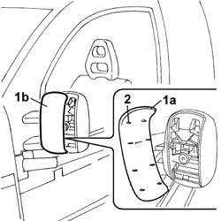
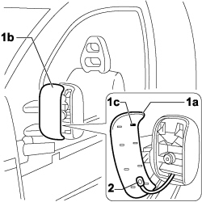

7005R37 door mirror boot - r r
- Path
- Procedures > 70 FITTINGS > 7005 PASSENGER COMPARTMENT FRONT SIDE DOORS > 7005R front door mirrors > 7005R37 door mirror boot - r r
- Kind
- repair procedure (removal / refitting; the operation number is the code)
- Applies to
- all engines; all production periods
- Interactive page
- https://sloeber94.github.io/elrnDB-fDbl/en/#/2585026
Applies to: engines: 1.2 8v, 1.6 16v, 1.3 JTD 16V, 1.9 JTD 8V, 1.9 DIESEL; all production periods
 Removing
Removing
 Refitting
Refitting1. Using a rubber hammer or ordinary screwdriver, tap on point (1a) of the cover and remove the cover (1b) from its seating.
2. Take care not to damage the retaining lugs.

Applies to: engines: 1.2 8v, 1.6 16v, 1.3 JTD 16V, 1.9 JTD 8V, 1.9 DIESEL; all production periods
Refitting
Removingcheck that the rearview mirror cover is not damaged.
If necessary touch up the paintwork.
Fit the cover in its seating until the retaining lugs click into place.
Applies to: all engines; all production periods
Removing
Refitting1. Use a rubber mallet and general-purpose screwdriver to strike point (1a) on the cover and prise up the cover (1b) from its seat, taking care not to damage the retaining detents (1c).
2. Prise up the external cover air temperature sensor.

Applies to: all engines; all production periods
Refitting
Removing- Check that the rear view mirror cover is not damaged.
- If necessary, retouch the paintwork.
- Fit the external air temperature sensor in its seat.
- Fit the cover in its seat until the retaining detents click into place.